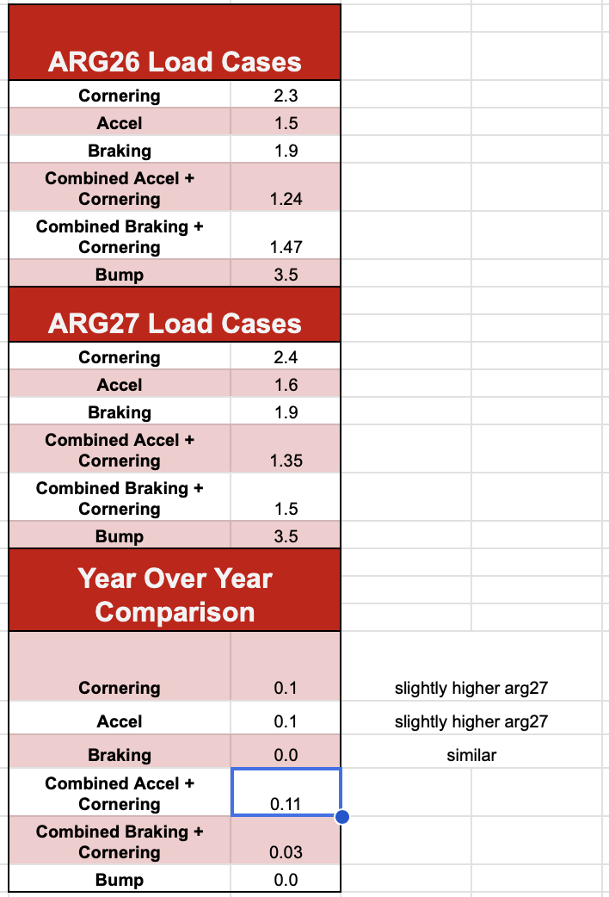
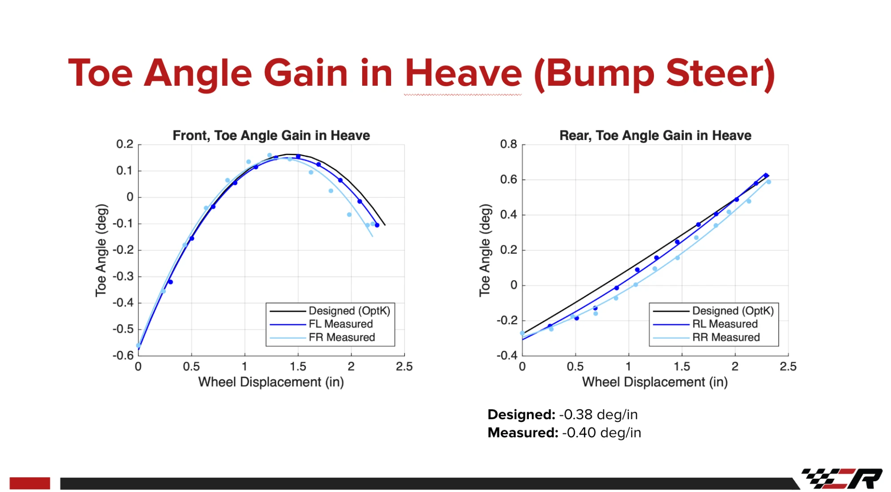
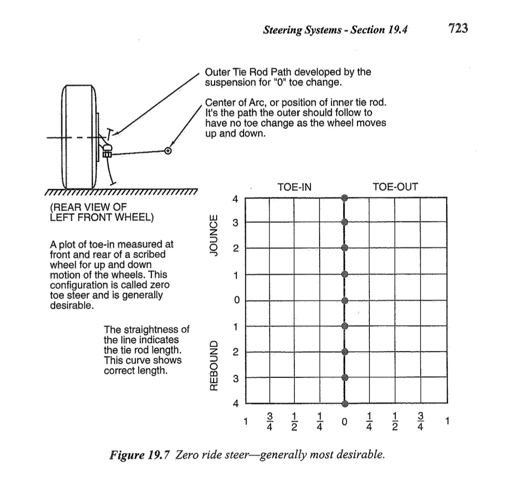
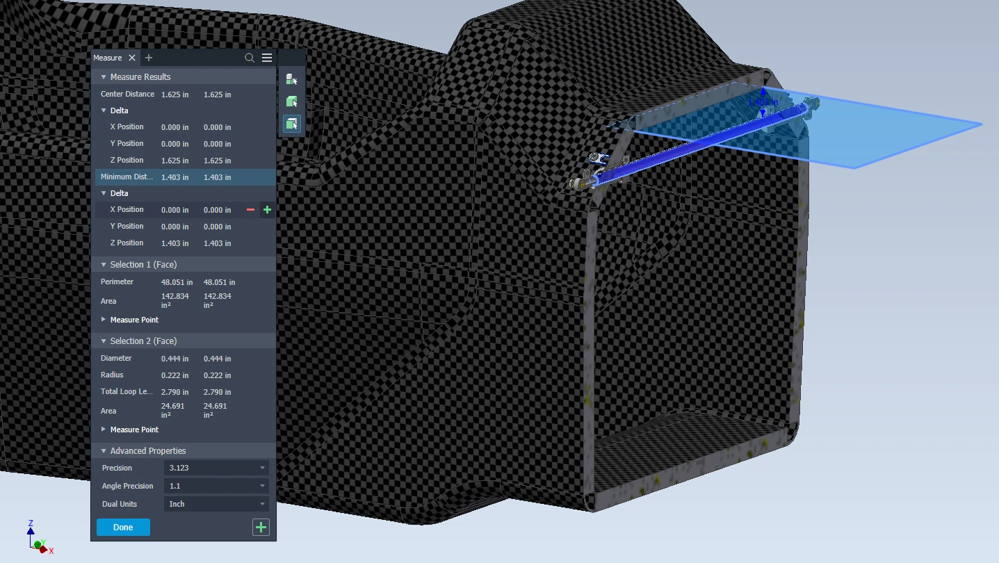
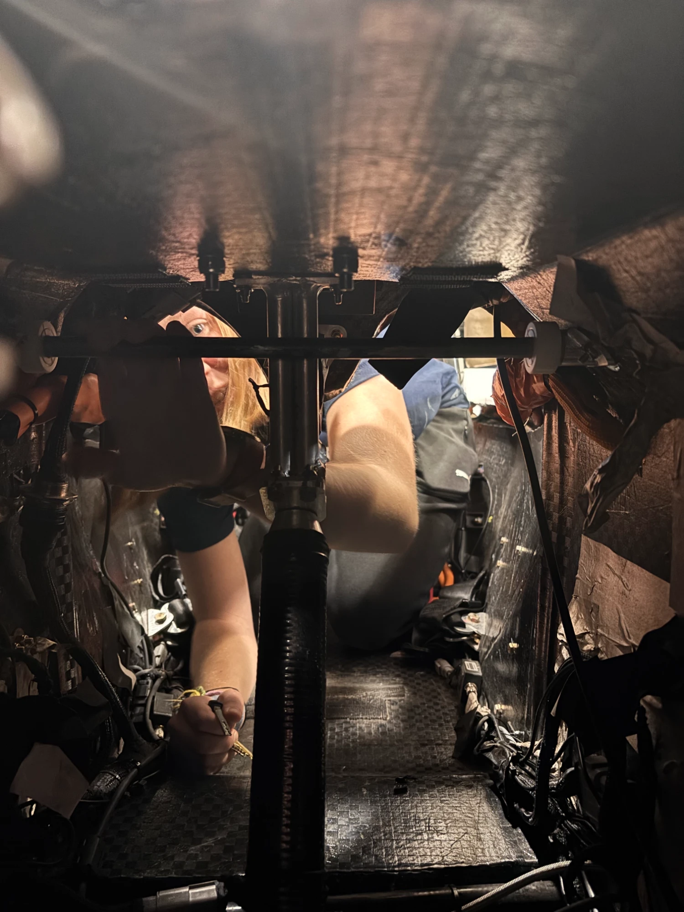

1ARG26 Suspension
ARG26 uses a double wishbone suspension at all four corners, with push link and rocker actuated dampers and blade style anti-roll bars front and rear.
NoteARG27 does not introduce major kinematics changes. The ARG27 suspension work is focused on rates.
| Item | ARG26 |
|---|---|
| Suspension type | Double wishbone, front and rear |
| Spring and damper actuation | Push link and rocker, front and rear |
| Dampers | Öhlins TTX25 MKII |
| Springs | Hyperco FSAE coil springs |
| Anti-roll bars | Blade style, front and rear |
| Rear toe control | Toe link |
| Link material | 4130 steel tube |
| Wheelbase | 61 in |
| Design ride height | 1.5 in |
| Car weight without driver | 440 lb |
2Kinematics Methodology
Kinematics are chosen by looking at how the suspension behaves at static ride height and how it changes as the car moves through sweeps in OptimumK. The sweeps checked are:
2.1Heave
- Camber change vs heave
- Steering angle vs heave
- Motion ratio vs heave
2.2Roll
- Camber change vs roll
- Lateral roll center position vs roll
- Vertical roll center position vs roll
2.3Steering
- Left and right steer angles vs steering wheel angle
3Expected Motion
Each sweep needs a range to run over. The ranges come from the motion the car is expected to see on track.
3.1Heave
The heave sweep runs from full compression to full droop. For ARG26 that is 2 in of compression to TBD in of rebound.
3.2Load Cases
The load cases were determined by our unsprung lead, Parker. She compiled racing data from the IMU on the PDU to get the acceleration cases. The IMU does not sit at the CG, so the data is post processed to the CG first with the IMU CG telemetry corrector, which uses:
aCG = aIMU − α × r − ω × (ω × r)
where α is the angular acceleration, ω is the angular velocity, and r is the position of the IMU relative to the CG.

The combined cases apply the listed acceleration both laterally and longitudinally. Bump is vertical only. ARG27 is slightly higher in cornering and accel, and similar in braking.
3.3Pitch and Roll Gradients
With the load cases, the pitch and roll of the car can be estimated by multiplying each acceleration by its gradient. The pitch gradients come from the Pitch sheet of the SU26 Parameters and Analysis spreadsheet: −0.523 deg/g in dive and −0.556 deg/g in squat. The roll gradient is designed to fall between 0.55 and 0.7 deg/g. The maximum, 0.7 deg/g, is used here to get the largest range of motion.
3.4Summary
| Motion | Load case | ARG27 |
|---|---|---|
| Heave | Full travel | 2 in compression to TBD in rebound |
| Roll | Cornering | 1.68° |
| Dive | Braking | 0.99° |
| Squat | Accel | 0.89° |
| Roll Dive | Combined braking + cornering | 1.05° 0.78° |
| Roll Squat | Combined accel + cornering | 0.95° 0.75° |
4Bump Steer
4.1OptimumK Sign Convention
- +Heave = rebound
- −Heave = compression
- Positive toe = toe out
- Negative toe = toe in
4.2ARG26 Bump Steer
On ARG26, the front toe changed along a curve of about 0.7° across the wheel travel, and the rear toe changed linearly at −0.38 deg/in designed and −0.40 deg/in measured.

4.3Zero Bump Steer on ARG27
For ARG27 we changed to zero bump steer, and therefore zero ride steer, at the front and the rear. Toe change in heave adds understeer or oversteer that the driver does not ask for. We do not want that from the kinematics, because we can get the balance we want from elsewhere on the car.

4.4Moving the Toe and Steering Links
As the wheel moves up and down, the A-arms move the outer point of the toe link (rear) or steering link (front) along a path. The link itself swings the outer point along an arc around its inner point. If the two paths do not match, the link pushes or pulls on the upright as the wheel moves, and the wheel steers.
For zero bump steer, the link has to follow the same arc as the path the suspension sets. That means the inner point sits at the center of that arc and the link is the right length, as in Figure 4. On ARG26 the links did not follow that arc, so for ARG27 we moved the inner and outer pickup points of the toe and steering links and reran the heave sweep in OptimumK until the toe change was close to zero across the travel.
5Ackermann
ARG26 used 12% Ackermann. The methodology for choosing the ARG27 Ackermann is on the Ackermann Selection Methodology page.
6Rocker Pickup Points
The rocker pickup points were moved on ARG27 for better packaging.
7Anti-Roll Bar
On ARG27 the front anti-roll bar moves up 0.5 in so the car meets the foot well template rule, and the rear anti-roll bar moves up by the same amount.
| Axle | OptimumK point | ARG26 z (in) | ARG27 z (in) |
|---|---|---|---|
| Front | Drop link left: Anti-Roll Bar | 17.525 | 18.025 |
| Front | Chassis left: Pivot | 17.525 | 18.025 |
| Rear | Drop link left: Anti-Roll Bar | 14.629 | 15.129 |
| Rear | Chassis left: Pivot | 14.629 | 15.129 |

